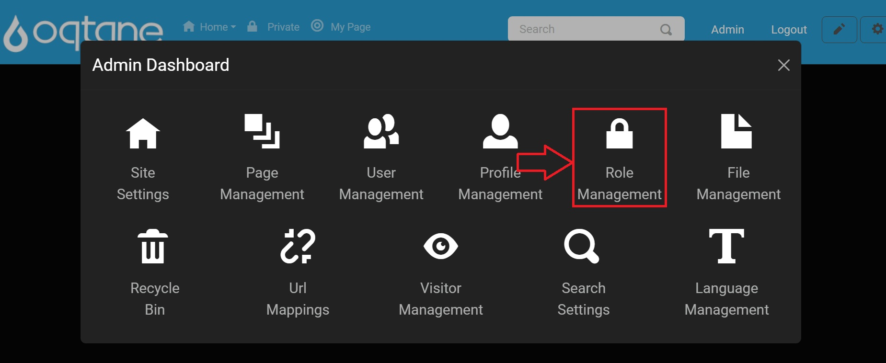
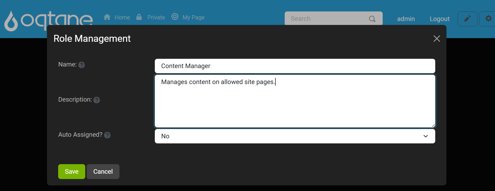
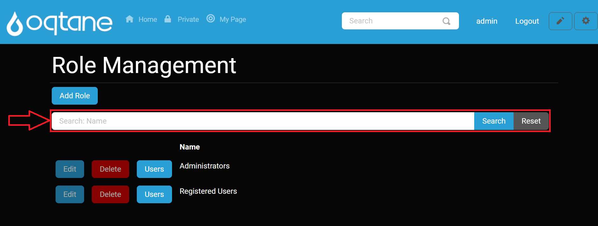
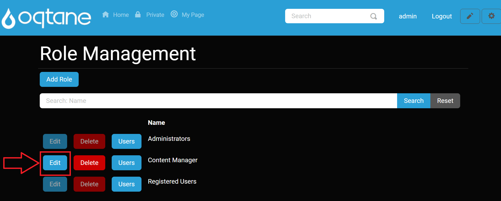
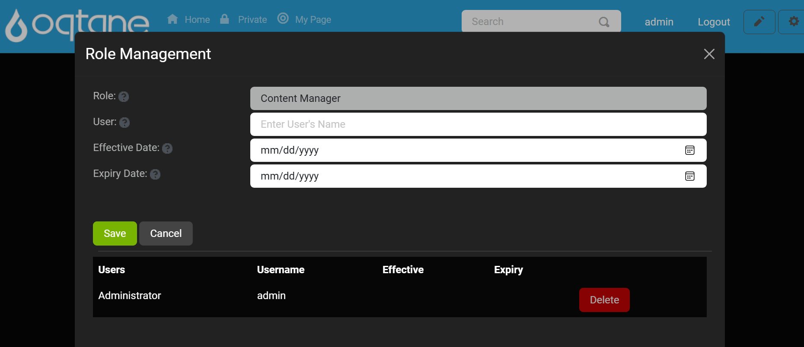

Role Management

Overview
The Role Management feature in Oqtane allows you to create and manage security roles, which are groupings of users assigned specific permissions or access. Roles can be used for content targeting, granting editing rights, or restricting access to certain areas of your site.
Security roles operate similarly to permission-based systems: first, you create a role to group users, then add users to the group, and finally, assign the group permissions on pages or modules.
Control Panel Walk-through
Accessing the Role Management Feature
Click the Control Panel icon to access additional settings.

In the control panel, select the button to open the Admin Dashboard.

In the admin dashboard, click on the Role Management icon to manage user roles.

Role Management Features
1. Add Role
The Add Role feature enables you to create a new user role with specific settings.

Add Role Settings
When you click Add Role, a window opens with the following fields:
- Name: The name of the role, as it will appear in the role list.
- Description: A brief description explaining the role's purpose.
- Auto Assigned?: Select Yes or No to determine whether new users are automatically assigned to this role.
After filling out the settings, use the Save button to create the role, or Cancel to discard changes. You can also use the X button in the top-right corner to close the window without saving.

2. Search Roles
The Search Roles function allows you to quickly find roles by name. Enter the name in the Search field and click Search to filter results, or Reset to clear the search.

3. Role List
The Role List displays all existing roles, including default roles such as Administrators and Registered Users. For each role, you can perform the following actions:
| Action | Description |
|---|---|
| Edit | Modify the role's name, description, and auto-assign settings (disabled for Administrators and Registered Users). |
| Delete | Permanently removes the role from the system (disabled for Administrators and Registered Users). |
| Users | Manage users within the role, including adding or removing users. |
4. Edit Role
Clicking the Edit button for a role opens the same window as the Add Role feature, where you can modify the role's Name, Description, and Auto Assigned settings.

Note: The Edit button is disabled for system roles like Administrators and Registered Users.
5. Delete Role
Clicking the Delete button will delete a role. Deleting a role removes its permissions and cannot be undone. System roles like Administrators and Registered Users cannot be deleted.
6. Manage Users in a Role
The Users button allows you to add or remove users from a specific role. Clicking Users for a role opens a window where you can:
- User: Enter the user’s name to add them to the role.
- Effective Date: Set the date when the role assignment starts.
- Expiry Date: Set the date when the role assignment ends (optional).
At the bottom of this window, you can view a list of all users currently assigned to the role.

Use Save to apply changes, Cancel to discard changes, or X to close the window.
Summary
The Role Management feature in Oqtane allows you to organize users by roles, granting or restricting access based on the assigned role. With options to add, edit, delete, and manage users in roles, you have flexibility in setting up and controlling permissions for your site.